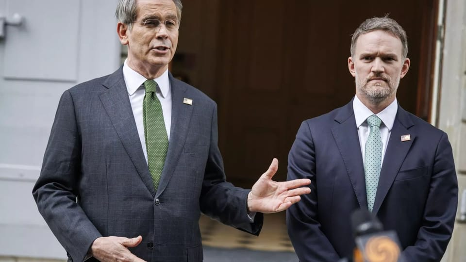

世界苦茶05月13日新闻 | 35条 | 中美贸易战现惊天逆转

中美贸易战现惊天逆转 | 俄罗斯似要撤回普京提出的元首直接会谈 | 库尔德工人党宣布解散 | 英国收紧移民政策 | 央视撤销播出《纽约我爱你》
透明茶室
苦茶数据
美元兑人民币：7.18（昨日7.22，前日7.24）
美元兑日元：147.85（昨日146.05，前日144.98）
上证指数：3371（昨日3360，前日3342）
标普500指数：5844（昨日5659，前日5663）
比特币：102626（昨日103917，前日103477）
布伦特原油：64.83（昨日64.29，前日63.91）
中国新闻
• 郑州摊贩被索香烟费 ：中国河南省会郑州市有摊贩称被索要香烟当“保护费”交给城管，当地官方通报指涉事人员已被停职调查。据河南广播电视台都市报道消息，有摊贩爆料称，有郑州夜市摊主被索取“保护费”。“只要每月上交一条价值240元人民币至260元的芙蓉王香烟，就能确保在夜市顺利经营；否则将面临无法继续摆摊的困境。”郑州经开区联合调查组上星期天发布调查情况通报称，媒体报道经开区八大街地铁口附近有个别摊贩向其他摊贩收取香烟，并称收取后统一交给城管。经开区立即成立联合调查组开展调查核查。
• 央视撤播《纽约我爱你》 ：中美均称日内瓦会谈取得实质进展后，中国中央电视台电影频道原本拟在星期一晚播出电影《纽约，我爱你》，但在引发网络热议后临时撤档，相关社媒热搜话题也被封禁。湖北广播电视台长江云新闻星期一上午11时许在官方微博发布央视官网节目单截图，称中美经贸高层会谈取得实质性进展，央视电影频道将于星期一晚10时24分和11时01分播放影片《纽约，我爱你》。这条微博标注的话题“六公主排片纽约我爱你”一度登上微博热搜。有中国网民称：“以为要看一段时间的《上甘岭》，没想到已经开始放《纽约我爱你》了。”“看国际形势必看六公主排片。”
• 中国发布国家安全白皮书 ：中国官方发布有关国家安全的白皮书，强调反对安全泛化，不实施安全胁迫，也不接受威胁施压。据新华社报道，中国国务院新闻办公室星期一发布《新时代的中国国家安全》白皮书。白皮书除前言、结束语外分六个部分，分别是：中国为变乱交织的世界注入确定性和稳定性；总体国家安全观为新时代国家安全指引方向；为中国式现代化行稳致远提供坚实支撑；在发展中固安全，在安全中谋发展；践行全球安全倡议，推进国际共同安全；在深化改革中推进国家安全体系和能力现代化。
• 中国打击矿产走私行动 ：中国商务部新闻发言人表示，有境外实体与境内不法人员相互勾结，企图通过走私等方式规避出口管制措施。为遏制走私等势头，开展打击战略矿产走私出口专项行动，坚决防止战略矿产非法外流。中国国家出口管制工作协调机制办公室在上个星期五部署开展打击战略矿产走私出口专项行动。中国商务部新闻发言人星期一就开展这一行动表示，加强战略矿产资源出口管制事关国家安全和发展利益。对部分战略矿产实施出口管制以来，发现一些境外实体与境内不法人员相互勾结，企图通过走私等方式规避出口管制措施。
• 中日就钓鱼岛再起争议 ：日本官方称，中国海洋调查船星期天在尖阁诸岛（中国称钓鱼岛）周边的日本专属经济区内，将疑似管线状物体伸入海中。据日本共同社报道，日本第11管区海上保安总部星期天早上6时半许发现上述情况，并认为涉事船只疑似开展未经事先同意的海洋调查，并通过无线电要求其停止活动。涉事船只当天下午1点20分许向日中中间线西侧驶离。
亚太印太新闻
• 缅军空袭致22人死亡 ：缅甸目击者称，缅军空袭一所学校，造成22人死亡，大部分死者为儿童。法新社引述当地居民报道，缅军于星期一上午10时左右，向中部实皆省奥廷昆村的一所学校发动空袭。实皆省是3月28日缅甸大地震的震中。遭袭学校的一名教师透露，目前空袭已导致22人死亡，分别为20名儿童，以及两名教师。“我们尝试分散孩子们，但战斗机很快就投下了炸弹。” （翻評：緬甸軍政府不是說因為地震延長停火？獨裁政權不可信。）
• 印巴军方举行电话会谈 ：印度和巴基斯坦军方领导人通电话。印度亚洲国际新闻报道，印巴军方领导人的会谈于星期一结束。双方原定于当地时间当天中午通话，后来推迟到当天晚间。目前印巴双方均未发布这次通话的内容或其他细节。分析人士此前告诉法新社，此次谈话预计聚焦于停火机制细节，旨在产生任何误判。
• 印尼弹药爆炸致13死 ：印度尼西亚西爪哇省在军方处理过期弹药时发生爆炸，造成13人死亡。路透社报道，印尼军方发言人克里斯托梅星期一告诉当地媒体，军方人员在西爪哇省处理过期弹药，其间发生爆炸，导致九名平民和四名军方人员死亡，军方正在调查事故原因。另据军方发言人瓦胡通报，爆炸发生时，军方人员正在进行弹药销毁工作，调查会关注平民如何获准靠近事发现场。
• 印尼游船倾覆致7死34伤 ：印度尼西亚西部明古鲁省发生一起游船倾覆事故，造成七人死亡、34人受伤。新华社报道，印尼明古鲁省官员星期一说，事故发生在星期天下午4时30分左右。一艘木质游船载有98名当地游客和六名船员，从一座名为老鼠岛的旅游小岛返回省会明古鲁市途中失事。明古鲁省搜救办公室负责人穆斯利昆说：“这艘船即将抵达明古鲁市时，发动机出现故障。当时天气状况恶劣，有强风和大浪，游船遭遇大浪袭击后触礁漏水，随后沉没。”
• 尹锡悦首次正门进法院 ：韩国前总统尹锡悦星期一出席涉嫌带头发动内乱及滥权案庭审，首次从地上出入口进入法院大楼。韩联社报道，尹锡悦于上午9时55分左右乘车抵达首尔中央地方法院二楼的西馆入口处。他下车后对媒体提问缄默不言，直接进入法庭。这是尹锡悦首次在媒体拍摄下公开步入法庭。在前两次庭审，应总统警卫处的要求，法院批准尹锡悦由地下停车场进入法院大楼。
• 蔡英文卸任后将访英国 ：正在访问欧洲的台湾前总统蔡英文，将应邀前往英国进行卸任后的首次访问，期间将走访英国政界，并与台湾旅英的各界专业人士互动。综合台湾《上报》和中央广播电台报道，蔡英文上星期五启程前往欧洲，出访立陶宛和丹麦。蔡英文办公室发言人蔡舒景星期一表示，蔡英文在结束丹麦哥本哈根的访问行程后，将应邀前往英国进行为期数日访问，期间将走访英国政界，与台湾旅英各界专业人士互动，并与多个学术研究机构进行交流。
• 朱立伦回应卢秀燕参选传闻 ：传出台中市长卢秀燕拟在罢免三阶投票前表态参选国民党主席后，现任国民党主席朱立伦微笑回应称，“很好，非常好，非常欢迎”。综合TVBS新闻网和ETtoday新闻云报道，朱立伦星期一上午在台北为国民党立委李彦秀站台，进行“”反恶罢、战独裁”街讲。中时新闻网星期天报道，检调侦办罢免民进党立委涉死亡连署案，开搜蓝营各地党部。一名不具名的蓝营重要人士透露，检调小案大办，却意外替陷入僵持的国民党主席之争带来解套契机，卢秀燕不排除在罢免国民党立委投票前，举“全党危急存亡”大旗，表态选党主席。
• 菲律宾举行中期选举 ：菲律宾星期一举行2025年中期选举，近7000万登记选民将参加投票。新华社报道，据菲律宾选举委员会介绍，本次选举将改选菲律宾国会众议院全部317个席位和参议院24个席位中的12席。此外，全菲各省市地方行政首长和地方议会议员也将改选。菲律宾国会包括参众两院，参议院由24名议员组成，任期六年，每三年改选半数席位。众议员任期三年，每三年改选一次。 （翻評：這也是對亞太局勢有重大影響的一次選舉。杜特爾特依然保持重大政治影響力，和小馬科斯家族分庭抗禮。）
科技新闻
• 教育部发布AI使用规范 ：中国教育部发布人工智能使用指南，明确规定小学阶段禁止学生独自使用开放式内容生成功能，教师不得将生成式人工智能作为替代性教学主体。综合央视新闻和澎湃新闻报道，中国教育部基础教育教学指导委员会发布《中小学人工智能通识教育指南（2025年版）》和《中小学生成式人工智能使用指南（2025年版）》。其中通识教育指南提出，关于AI的教育应在小学阶段注重兴趣培养与基础认知，初中阶段强化技术原理与基础应用，高中阶段注重系统思维与创新实践，推动人工智能教育从局部试点转向全域覆盖，形成具有中国特色的中小学人工智能通识教育。
• 阿联酋将AI课程引入小学 ：阿拉伯联合酋长国教育部长表示，该国正在公立学校推出从最初几年开始的人工智能课程，旨在成为区域人工智能中心，避免过去对社交媒体的传播不做出反应的 “错误”。虽然AI编程最初是为高中生准备的，但技术的快速发展促使教育部扩大了年龄范围，将幼儿园的学生也纳入其中。教育部长表示，我们意识到，在每个人的日常生活中，包括年仅四岁的儿童，他们都会以某种方式接触到它，教孩子们批判性地思考人工智能聊天机器人的输出将是新人工智能课程的核心。她说，学生“需要意识到存在偏见，这意味着当我得到一个结果时，不要盲目地接受它”。
• Perplexity将完成一轮估值140亿美元的融资： 美国AI搜索引擎公司Perplexity正接近完成新一轮融资谈判，使得公司估值升至近 140亿美元。知情人士表示，知名风投机构Accel将牵头本轮融资，预计总额达 5亿美元。作为融资的一部分，Accel合伙人萨米尔·甘地将加入Perplexity董事会。值得一提的是，Perplexity去年六月融资时的估值只有30亿美元，到去年底已经飙升到90亿美元。若最新一轮融资如期落地，意味着仅仅过了小半年，公司估值又涨了超50%。此外，Perplexity公司出圈的产品为人工智能搜索工具。与谷歌等传统工具不同，Perplexity以组织好的文字回答用户提问，并附上信息来源的网站链接。
财经新闻
• 中国汽车销量突破千万 ：中国汽车工业协会数据显示，今年1月至4月，中国汽车产销量均超过1000万辆。据新华社报道，2025年1月至4月中国汽车产销量分别为1017万5000辆和1006万辆，同比分别增长12.9%和10.8%，是首次突破千万辆大关。其中，新能源汽车产销量分别为442万9000辆和430万辆，同比分别增长48.3%和46.2%。新能源汽车新车销量达到汽车新车总销量的42.7%。
• 日本拒绝美方贸易提议 ：日本首相石破茂说，日本不会与美国达成一项不包括汽车关税的初步贸易协议。彭博社报道，石破茂星期一在议会被问及美国要求日本接受一项不包括美国汽车进口关税的临时协议的可能性，他明确表明了这个立场。日本首席贸易谈判代表赤泽亮正在同一场议会会议说，日本将持续寻求豁免美国的所有关税。
• 黄金因贸易消息下跌 ：中美贸易谈判释放积极信号后，市场紧张情绪随之缓解，投资者撤出避险资产，转向风险资产，导致黄金价格下跌。据路透社报道，截至新加坡时间星期一早上10时33分，现货黄金下跌1.4%，报每盎司3277.68美元，美国黄金期货则下跌1.9%，至3281.40美元。Reliance Securities高级商品分析师特里维迪说：“美元指数上涨，因为特朗普政府称贸易谈判取得进展，而中国也在周末参与了在瑞士举行的谈判，这些都对金价构成压力。”
• 台积电美国厂产能爆满 ：台湾媒体报道称，台积电在美国产区的产能抢手，后续将开出的三座新厂产能已被客户预订一空。《台湾经济日报》星期一报道上述消息。报道称，台积电美国新厂频频传出生产良率捷报，促使美系客户询问下单意愿攀升，不仅美国新厂的第三厂提早动土，已确定将扩充的后续三个厂产能也传出被包下。报道称，业界认为，苹果、英伟达、超微、高通、博通等美系大厂考量地缘政治变化，异地备援生产需求增加，台积电海外厂区特别是美国厂稳步推动扩产，可让美国客户安心。
• 特朗普宣布大幅降药价 ：美国总统特朗普宣布将处方药价格削减59%。路透社报道，特朗普星期一在社媒平台“真相社交”上发文说：“药品价格将下调59%。”但他尚未透露降低药价计划的具体细节。他同时表明，汽油、能源、食品杂货等价格都将下调。
• 中国摸排战略矿产出口链 ：中国5月12日开“加强战略矿产出口全链条管控工作部署会”，内蒙、江西、湖南、广东、广西、贵州、云南出席。各地要对本地区战略矿产出口全链条各环节企业进行系统摸排并建立台账，指导属地企业加强合规制度建设，提高企业合规意识和能力，合力确保管控措施落实到位。坚持“预防在先，处置在前”，密切跟踪战略矿产流向，强化信息研判共享。5月9日开了 “打击战略矿产走私出口专项行动现场会”，打击伪报瞒报、夹藏走私、第三国转口等典型规避手法，深挖走私网络。
• 中美关税调整具体细则 ：中美日内瓦经贸会谈联合声明：美国对华普征30%关税，中国对美普征10%关税。双方对4月2、8、9日三件行政令形成的125%普征关税，取消91%、暂停24%，保留10%。5月14日前完成行政命令修改。美国对华的301关税，以及4月启动的小额包裹关税、20%“芬太尼”关税仍继续。中国需取消4月2日以来的非关税“反制”措施，不清楚稀土管制等具体措施是否在此列。双方基于近期讨论，相信持续的协商有助于解决关切。决定在采取上述举措后，在牵头人机制下继续进行协商谈判。
• 美国部分削减小包裹关税： 在周一与中国达成了削减对等关税的临时贸易协定后，白宫在周一晚间发布了一项行政命令，将价值800美元以下的小包裹关税税率从120%降至54%，但仍保留100美元每件邮政包裹的固定关税选项，并将在6月1日提升固定关税选项至200美元。由于海关和边境保护局制定了对这些商品征收关税的协议，特朗普于今年早些时候正式取消了长期存在的小包裹关税豁免，此次关税逆转将可能减轻Shein和Temu等中国廉价零售商客户的价格压力。
俄乌战争
• 泽连斯基邀教宗访乌 ：乌克兰总统泽连斯基与新任罗马天主教教宗良十四世进行首次通话，他邀请良十四世访问乌克兰。法新社报道，泽连斯基星期一与良十四世通电话，感谢良十四世呼吁乌克兰实现和平。泽连斯基在社媒发文说：“我邀请教宗对乌克兰进行宗座访问。这类访问会为所有信徒、为我们全体人民带来真正的希望。”泽连斯基说，两人在通话中讨论了数千名乌克兰儿童遭俄罗斯驱逐的问题，基辅期待梵蒂冈协助这些儿童重返家园。
• 波兰关闭俄驻克拉科夫领馆 ：波兰政府以从事破坏活动为由，决定关闭俄罗斯驻克拉科夫领事馆。法新社报道，波兰外交部长西科尔斯基星期一在社媒平台X发文，宣布这一决定。贴文说，有证据表明，俄罗斯情报机构实施针对华沙马利维斯卡购物中心的大火。鉴于这一“可耻的破坏行为”，波外交部决定撤销对俄驻克拉科夫领事馆活动的授权。
• 王毅表示，中俄关系坚如磐石 ：中国外交部长王毅说，中俄关系正处于历史最好时期，试图在中俄之间打楔子只能是一场空想。据中国外交部网站消息，王毅介绍中国国家主席习近平5月7日至10日访问俄罗斯的情况时说，在百年变局加速演进、国际局势变乱交织背景下，此访发出了中俄关系坚如磐石、二战胜利成果不容挑战、世界要公道不要霸道的时代强音。王毅说，中俄双方重申始终视对方为优先合作伙伴，将共同抵制任何干扰破坏中俄传统友谊和深度互信的图谋，为各自发展振兴助力，为世界提供更多稳定性。“试图在中俄之间打楔子只能是一场空想。”
• 泽连斯基将在土耳其等待普京 ：乌克兰总统泽连斯基说，他将在土耳其“等候”俄罗斯总统普京前往会谈。新华社报道，泽连斯基星期天晚在社交媒体发文说，乌方期待星期一起俄罗斯和乌克兰实现全面持久停火，这将为外交活动提供必要基础。他15日将在土耳其“等候”普京前往会谈。普京11日凌晨对媒体发表声明，提议俄乌双方15日在土耳其伊斯坦布尔无条件重启直接谈判。普京还说，谈判期间可能就一些新的停火建议达成一致。
• 俄百架无人机袭击乌克兰 ：乌克兰空军5月12日称，俄罗斯在夜间袭击中向乌克兰发射了百余架自杀式或诱饵无人机。这表明俄罗斯已事实上拒绝了此前乌克兰和欧洲提出的30天停火提议。此前，法国和德国敦促俄罗斯加入停火，否则将面临进一步制裁。克里姆林宫发言人佩斯科夫表示，向俄罗斯发出最后通牒是“不可接受的”，也不会奏效。此外，克里姆林宫尚未回应谁将赴土耳其参加俄乌的直接会谈，仅表示俄罗斯决心认真寻找实现长期和平解决方案的方法。 、
• 克里姆林宫称，普京接受莫迪的访问印度邀请： 克里姆林宫周一表示，俄罗斯总统弗拉基米尔·普京已接受印度总理纳伦德拉·莫迪的访问邀请。普京和莫迪在周一的通话中强调，俄印关系并未受到外部影响，且持续蓬勃发展。
• 克里姆林宫拒绝泽连斯基的伊斯坦布尔和平峰会提议，称其为“政治闹剧”： 克里姆林宫拒绝了乌克兰总统泽连斯基提出的于5月15日在伊斯坦布尔与俄罗斯领导人普京举行直接会谈的提议。俄罗斯高级官员谴责该提议是政治闹剧，并坚称莫斯科不会在任何形式的压力下参与其中。据俄罗斯国家媒体塔斯社5月12日报道，联邦委员会副主席康斯坦丁·科萨切夫驳斥了泽连斯基的提议，称其为“一场闹剧和表演”。 （翻評：等一下，普京和澤連斯基直接會談不是俄羅斯提出的嗎？是普京提出的，怎麼現在普京先慫了。）
其他新闻
• 以方称谈判将在战中进行 ：以色列总理内坦亚胡办公室表示，根据以色列的政策，以色列和哈马斯的任何未来谈判都将在炮火中进行，以实现所有战争目标。新华社报道，内坦亚胡办公室星期天发表声明说，美国方面已通知以色列，哈马斯将释放拥有美国和以色列双重国籍的人质艾丹·亚历山大，此举是哈马斯向美方展现的一种姿态，预计将促成双方根据美国中东问题特使威特科夫此前提出的停火方案，就释放剩余人质展开谈判。以色列此前已同意该方案，并正在为方案可能的实现做准备。
• 英国收紧移民政策 ：英国政府发布《移民白皮书》，并宣布收紧移民政策。法新社报道，英国首相斯塔默领导的工党政府星期一发布《移民白皮书》，宣布结束前届保守党政府实施的“开放边境实验”，进一步收紧英国的移民政策。另据新华社报道，斯塔默同日在唐宁街宣布，将申请英国永久居留权的最低居住年限，从五年延长至10年。
• 教宗谴责党争促自由 ：罗马天主教教宗良十四世首次对媒体发表讲话，谴责党派斗争，并呼吁释放被关押的记者。路透社报道，良十四世星期一在梵蒂冈保禄六世大厅面对媒体代表发表讲话。他表明：“我们沟通的方式至关重要：我们必须对口水战和形象战说‘不’，我们必须拒绝战争的范式。”他也为遭到关押的记者发声。据保护记者委员会统计，截至去年年底，有361名记者被关押。
• 库尔德工人党宣布解散 ：与土耳其政府陷入数十年流血冲突后，库尔德工人党决定自行解散。路透社引述库尔德媒体报道，库尔德工人党于星期一决定自行解散，并结束武装斗争。库尔德工人党成立于1979年，旨在通过武力，在土耳其与伊拉克、伊朗和叙利亚交界处的库尔德人聚居区，独立建国。